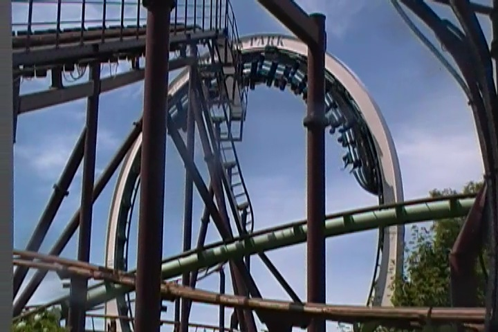
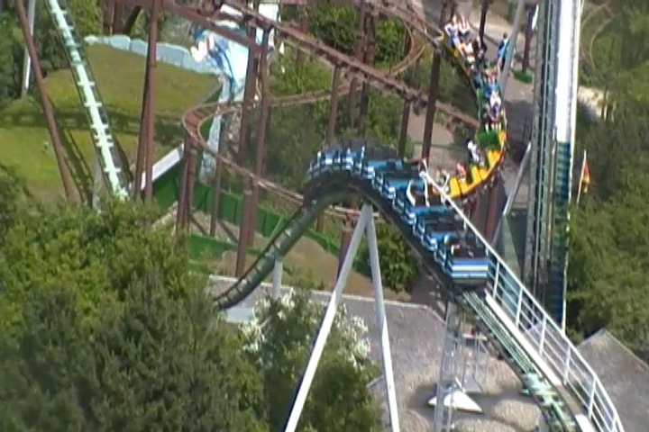
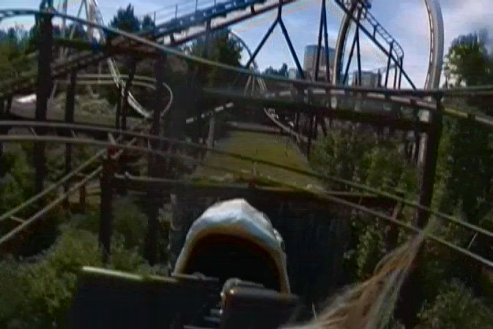
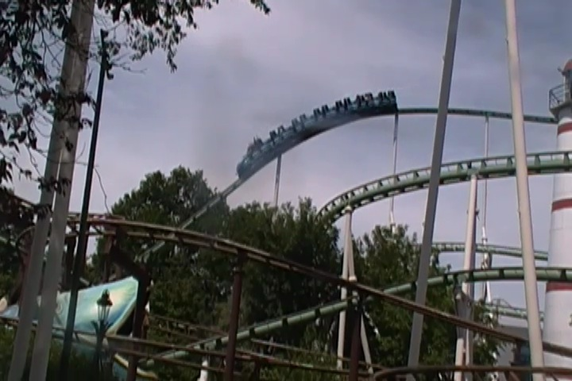
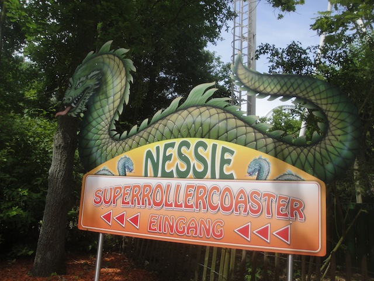

| |
Nessie Review

We're here at Hansa Park. Today's ride we'll be reviewing for you is Nessie. The parks old Schwarzkoph Looper. It's a real shame that these rides are slowly becoming rare because these rides are fun. Yeah, they're not the most intense coasters ever. But damn it. They're just a whole lot of fun. And this is definetly a fun Schwarzkoph Looper that we get to ride today. So let's hop in the trains, pull down the lap bars, and we're off!! We climb the lifthill, getting a nice view of the ride, the Roller Skater it's intertwined with, some trees, and a lighthouse that's just part of the park. But it looks very nice. I'm not sure what flags are on the lifthill though. Definetly not German flags. Anyways, we reach the top, get a good view of some farmland, and head around this big turn with a small dip. Eventually, we turn around and head into the first drop. YAY!!! The drop may not be intense, but it's a lot of fun and gives us some speed. We then head into the vertical loop. It won't make you black out or anything, but we get some nice Positve Gs here. And if you look down while upsidedown, you can see the Roller Skater. That's always fun. Fun little loop. I enjoyed it. We then rise up a big hill, turn a little bit. And we're coasting again. We got a nice view of the observation tower, the trees, Fluch von Novgorod in the distance, and the Baltic Sea out on the horizon. I like this. We go around the turn, and down another drop. Wee!! We then head over a tiny little hill. Yay! Small amount of airtime. It's not intense. But there's a small amount of mild air here. We then head up and go into a downward helix. HELIX! HELIX! HELIX! These things are always fun. We then head down a drop and...are about to be eaten by a giant snake. TAKE THE SNAKE!!! We get eaten and see a bunch of flashing lights as we come to a stop. Because remember Boys and Girls. The inside of snakes is full of flashing lights. And you will be perfectly fine if you are eaten by one. You just come to a stop, around a turn, and head out the back door. Congratuations everyone. You are now offically snake sh*t. You roll back into the station. And yeah. The best way to describe this ride would be "Fun, but not intense". Because yeah. It's just a fun ride. It's got some fun drops, a fun loop, a fun helix, and you get eaten by a snake. It's just an all around fun ride. And when you consider that Schwarzkophs like this are rare, that's just all the more reason to ride it. It may not be Fluch von Novgorod, but it's still a really good ride. Give it a ride while at Hansa Park.
7/10
Location: Hansa Park
Opened: 1980
Built by: Schwarzkoph
Last Ridden: June 17, 2014
Nessie Photos




Home
|